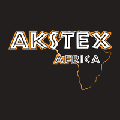
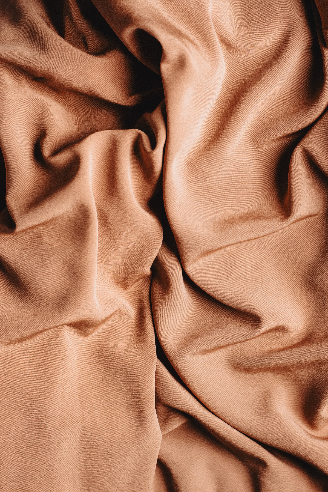
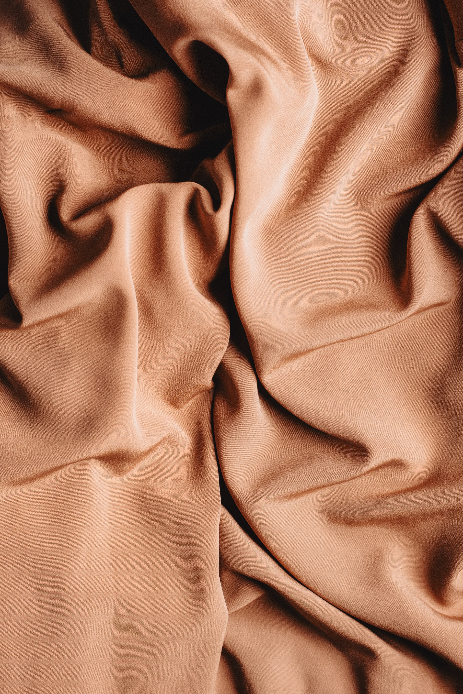

We sell it all, from your basic cottons and polyesters to your fancy shwe-shwes. We have it all here at Akstex Afirca .
 


Our elegant curtain fabric is imported from India, coming in many differnet designs and colours.
Denim woven locally and sold at affordable prices.
Dutchess satin silky smooth fabric used mainly for wedding dresses.
A proudly South African fabric, shwe-shwe is worn by locals as church garments
This is the best fabric store in the world ive never seen anything like it before in my entire life travelling across the seas.Monkey.D luffy
Sign up for our newsletter by cliking here